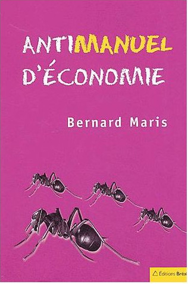
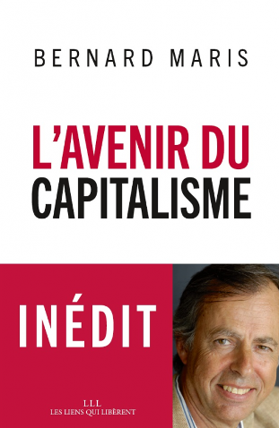

Hé toi le cgtiste (à encéphalogramme plat) qui m’a bloqué 2 heures sur la nationale 8 à Port de Bouc ce matin !
- Tu es un connard (imbécile fieffé d’après le petit Larousse) car sur la trentaine que vous étiez et qui avaient réduit la route de deux à une voix, une seule d’entre vous distribuait des tracts alors que si vous vous étiez répartis sur cinq cent mètres vous auriez pu distribuer des tracs à tout le monde sans ralentir le trafic car IL Y A UN FEU ROUGE sur cette nationale espèce d’abruti donc on est OBLIGÉ de s’arrêter compte tenu du trafic sur cette route !
- Tu n’as aucun sens des réalités car si on multiplie les une à deux heures d’attentes par les milliers de personnes bloquées dans leur voiture tu as anéanti plusieurs centaines de journées de travail, fait perdre du temps précieux à tes collègues chauffeurs routiers, peut être y avait-il des jeunes qui allaient passer le BAC ou d’autres qui avaient des choses importantes à faire ou qui n’avaient juste pas méritées qu’on leur vole deux heures de leur vie !
- Tu es un voleur car en deux heures j’ai cramé 5 litres d’essence pour faire 5 kilomètres : tu me dois 5 x 1,23 = 6,15€ !
- Tu as arrêté ton cerveau avant ou après être rentré à la CGT ? Parce que franchement faudra que tu m’expliques pourquoi tu fais chier des personnes lambda au lieu de t’en prendre aux responsables de tes conditions de travail :
- ton patron,
- peut être tes actionnaires,
- nos députés, sénateurs, ministres et président,
- toi même ? ...
Parce que je vais te dire, mon pote, parmi les milliers de gens dont tu as pourris la journée, je sais pas si il y en a d’autres mais je suis prêt à aller en prison avec toi pour jouer du tam-tam sous la fenêtre de nos députés et sénateurs qui se foutent de notre gueule en permanence : là ON s’en prendrait aux responsables de l’état dans lequel notre pays est.


- Tu sais mon gars, je t’encourage vivement à lire des livres d’économie, commence par l’anti manuel d’économie de Bernard Maris qui conclue par l’éloge de la gratuité. Tu comprendrais, si tu lisais ce livre, que tu as déjà gagné ta lutte mais tu ne le sais même pas et tes leaders des centrales syndicales ne sont pas prêts de t’expliquer les tenants et aboutissants par ignorance ou par corruption. Écoute bien ça mon ami parce que ça devrait changer nos vies à tous si suffisamment de monde lis cette lettre et applique ces principes :
On a pas besoin des "puissants" mais eux ont besoin de nous donc la seule chose nécessaire pour les renverser est que le NOUS représente 99 % et mathématiquement l’epsilon disparaîtra. Pourquoi NOUS ne sommes pas 99 % à ton avis ? Parce qu’ILS ont placés des paliers (échelons) de hiérarchie entre EUX et NOUS et qu’ON est tellement cons qu’on se fait des guéguerre entre échelons de fifres et de sous fifres alors que le seul combat qui mérite d’être mené est de couper la tête du serpent ! REPRENONS NOUS !!!
Envoie ton directeur syndical se faire foutre et marchons sur Paris mettre un coup de pied au cul à François Hollande, à son gouvernement et à notre soi disant représentation nationale qui laisse l’Europe être dirigée par Jean-Claude Junker, l’ancien premier ministre Luxembourgeois qui a permis aux plus grosses entreprises de détourner des centaines de milliard d’euros !
Nous marcherons jusqu’à Luxembourg, ouvrirons les coffres (enfin allumerons le bon ordinateur au bon endroit plus être pus précis) et redistribuerons aux peuples européens ce qui leur revient de droit ! Mark Zukerberg pourra continuer de rêver à ce qu'il veut, il aura juste un peu moins de pognon, et nous on arrêtera de nous saigner à blanc.
Tu crois que ce sont les policiers qui arrêteront notre combat ? Ils seront à nos côtés et veilleront à ce que les massacres du passé ne se reproduisent pas afin que l’on puisse les juger !
Tu crois que ce sera l’armée qui arrêtera notre combat ? Ils seront à nos côtés car ils souffrent plus que toi et moi ! Ils sont obligés d’acheter leur gilet par balle sur leur propres deniers !
Tu as peur que ce soit l’apocalypse si on bouscule le système ? Demandes toi si un enfant Français qui naît aujourd’hui avec 40 000€ de dette avant de prendre sa première inspiration ça n’est pas déjà l’apocalypse ?
Tu te demandes si on pourra toujours acheter des t-shirt à 3€ si on dit aux chinois et aux autres d’aller se faire foutre avec leurs conditions de travail misérables et leur dumping environnemental qui aboutit à une concurrence déloyale ? Je te dis non, pas à 3€ mais je te dis qu’un pays qui envoie des satellites dans l’espace doit être capable de fabriquer des t-shirts, faut pas déconner ! Et le deal est simple : ou tu veux vivre dans une communauté qui s’appelle la FRANCE et dans laquelle on applique une solidarité et pour pouvoir appliquer cette solidarité on impose aux autres nations qui veulent faire du commerce avec nous des normes équivalentes ou bien tu veux vivre dans une société ou il n’y a aucune règle ou juste pour faire semblant et surtout pas te déranger pendant tu bois ton café (ou ton pastis) mais qui t’enlèves tout choix, toute liberté.
Le capitalisme actuel (l'ultra-libéralisme) est pire que le nazisme car il s’attaque à la Terre Mère, à la terre nourricière, à la mère de toutes les cultures. Tu vois mon frère, moi qui t’ai insulté comme du poisson pourri ce matin parce que tu m’as fait péter un câble dans ma caisse sans clim en plein cagnard je pense pas que tu te doutais que je soutiens la LUTTE. Mais attention lutter avec intelligence pas pour des acquis à la con qui ne font que diviser les 99 % !
« Le capitalisme c’est l’exploitation de l’Homme par l’Homme, le syndicalisme, c’est le contraire ! »Coluche
Une petite phrase sur les journalistes politiques si tu me permets : si ils ne veulent pas passer pour des gentils toutous à sa mémère des hommes politiques qu’ils interview, qu’ils aient la gentillesse de commencer par une question du genre : « Monsieur le député, sénateur, ministre, comment voulez-vous que l’on éclate pas de rire et que l’on ne vous prennent pas pour les derniers des escrocs avec autant de régimes spéciaux, dérogations et avantages en tous genre quand vous nous parlez d’égalité et de fraternité !? ». C’est pas compliqué comme question ! Tu peux lire mon pamphlet J'accuse Patrick 'Magic' Cohen si la question t'intéresse.
Je propose donc que le peuple de FRANCE marche pour la n-ième fois de son histoire millénaire sur Paris, encadré par la Police et l’Armée garantes de la sécurité et de la volonté du Peuple. Pour éviter le chaos je propose qu’un gouvernement transitoire composé des membres de l’académie française ainsi que de nos chercheurs et scientifiques les plus brillants, surtout pas d’économistes, on a pas besoin d’économistes qui sont 10 fois plus nuls que les pires prévisionnistes de chez Météo France. On a besoin que de gens de lettres, de philosophes et de poètes pour qu’ils nous questionnent sur la civilisation que nous voulons mettre en place : le XX ème siècle est mort, la république Française à Papa aussi ! La technologie a transformée le monde mais au lieu de travailler de moins en moins grâce à l’aide qu’elle nous apporte, elle nous a rendus hystériques. Si la technologie ne sert ni à partager de la connaissance ni à optimiser notre productivité, c’est de la merde qui nous fait perdre du temps alors que l’on pourrait être à la plage ou aux champignons.
J’ai commencé cette lettre en te traitant de connard ( et tu peux me retourner l’insulte je l’accepte avec plaisir, on est tous le con d’un autre) et je maintiens l’insulte tant que l’on ne sera pas tous les deux sur la route et si tu veux savoir ce qui selon moi fait de nous des français, c’est que nous avons :
- la liberté de nous insulter
- l’égalité de nous insulter
- la fraternité de nous insulter
car nous avons du CARACTÈRE : aucun Français ne veut ressembler à un autre et il a bien raison !
Je dois pourtant terminer cette lettre en t’appelant mon FRÈRE car la colère que tu as réveillé en moi n’est pas contre toi, à peine un agacement, mais contre la SOCIÉTÉ et contre MOI, putain de bordel de merde, ça fait 15 ans que j’ai une bonne partie de la solution à nos problèmes et que je roumègue contre la « société » alors que je sais PARFAITEMENT ce qu’il faut faire et écrire cette lettre en est la première étape. Car en fait, je suis, et nous sommes tous une partie de la solution ! Seulement moi seul dans ma voiture et toi seul le long de la route, comment veux-tu que nous résolvions le moindre problème si nous ne faisons que nous croiser ? En physique on appelle ça changer de référentiel ...
Publié le Mercredi 3 mai 2017
Rédigé en juin 2016
PS : à l’attention du barbu cgtiste (t’es presque une caricature mec avec ta tronche !) que j’ai insulté ce matin, pour que tu me reconnaisses, je suis le connard à lunettes aux cheveux courts en Mazda Demio 1L2 GTX Rouge qui est passé vers 10h30 ! A la tienne camarade ;)